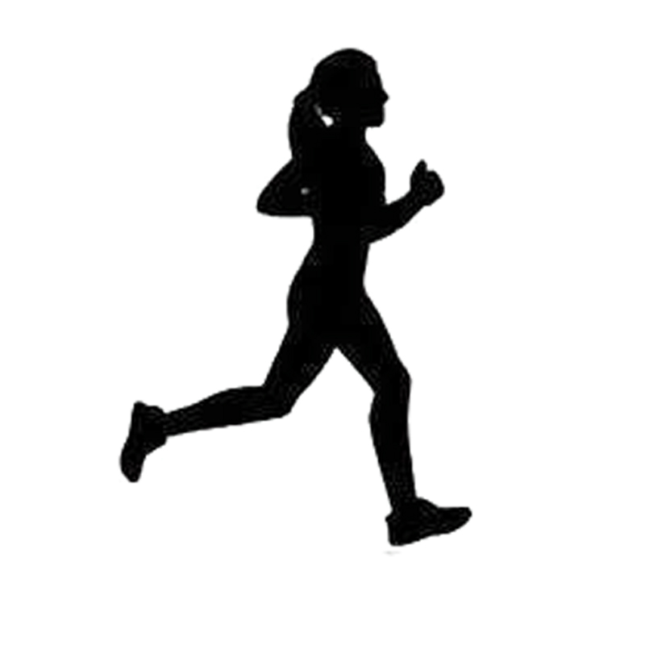
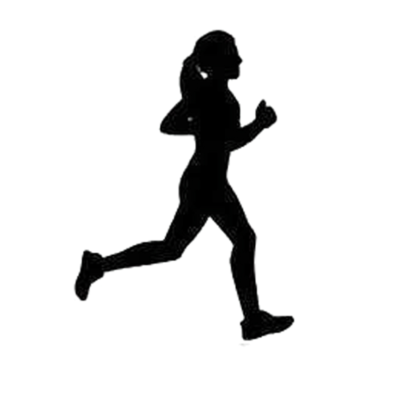

Licenciada en Geología
Universidad Complutense de Madrid 2007-2013
Responsable, resolutiva, organizada, y con capacidad para trabajar en grupo. Trabajadora, y con ganas de aprender para mejorar mis habilidades y cualidades profesionales.
 
